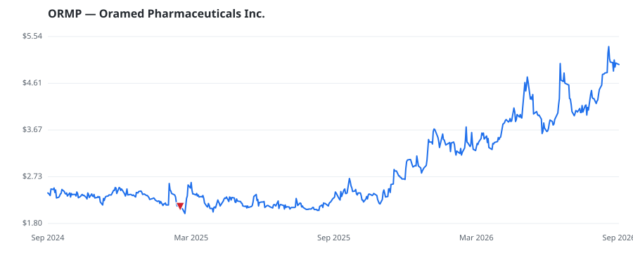

bullish · bearish · n/a — dots: price>SMA10 · SMA10>SMA50 · SMA50>SMA200 · up>down volume (20d)
Pharmaceuticals & Biotech · micro cap

Oramed Pharmaceuticals Inc is a pharmaceutical company that is engaged in the research and development of pharmaceutical solutions with a technology platform that allows for the oral delivery of therapeutic proteins. The company has developed an oral dosage form intended to withstand the harsh environment of the gastrointestinal tract and effectively deliver active insulin or other proteins. Its product pipeline includes ORMD-0801 for Diabetes, ORMD-0801 for NASH, and ORMD 0901. PHARMACEUTICAL PREPARATIONS · website
| Revenue | $2.0M | Net income | $64.0M |
|---|---|---|---|
| Operating income | $-15.1M | Diluted EPS | $1.50 |
| Assets | $230.9M | Equity | $199.7M |